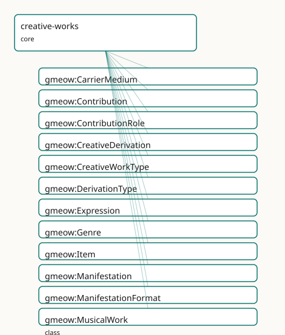

GMEOW Creative Works Module
- IRI: https://blackcatinformatics.ca/gmeow/slices/creative-works
- Tier: core
Group: core
What This Slice Covers
This slice owns 153 terms and contributes 159 mapping or projection rows. Use it when its terms match the native fact you want to preserve; use the linkage tables to see how those facts leave GMEOW for consumer vocabularies.
Dependencies
Consumers
- The WEMI spine under documents, software products, citations, and the music slice.
Local Map

Examples
Wemi Novel
- Source:
slices/core/creative-works/examples/wemi-novel.ttl - GMEOW terms:
gmeow:Expression,gmeow:Item,gmeow:Manifestation,gmeow:Work,gmeow:embodies,gmeow:exemplifies,gmeow:realizes,gmeow:title
# SPDX-FileCopyrightText: 2026 Blackcat Informatics® Inc. <paudley@blackcatinformatics.ca>
# SPDX-License-Identifier: CC-BY-4.0
#
# Worked example: the WEMI spine (, ). One abstract Work is realized by
# Expressions (the original text and a translation — distinct intellectual
# realizations of the same work), each embodied by Manifestations (the hardback
# and the ebook of the English text), each exemplified by Items (a specific
# physical or licensed copy). The four tiers are kept distinct so a translation,
# an edition, and a single library copy each sit at the right level — where
# surface vocabularies collapse all four into one "book" record.
@prefix gmeow: <https://blackcatinformatics.ca/gmeow/> .
@prefix ex: <https://blackcatinformatics.ca/gmeow/examples/creative-works/> .
# --- Work: the abstract intellectual creation, independent of any text or copy.
ex:novel a gmeow:Work ;
gmeow:title "The Lighthouse at World's End"@en .
# --- Expressions: two realizations of the one Work (P9-style co-equality — the
# translation is not a lesser version, just another Expression).
ex:englishText a gmeow:Expression ;
gmeow:realizes ex:novel .
ex:frenchText a gmeow:Expression ;
gmeow:realizes ex:novel .
# --- Manifestations: two embodiments of the English Expression (print + digital).
ex:hardback a gmeow:Manifestation ;
gmeow:embodies ex:englishText .
ex:ebook a gmeow:Manifestation ;
gmeow:embodies ex:englishText .
# --- Item: one exemplar — a specific physical copy of the hardback.
ex:libraryCopy a gmeow:Item ;
gmeow:exemplifies ex:hardback .
Terms
Classes
| Term | Label | Definition |
|---|---|---|
gmeow:CarrierMedium |
Carrier Medium | The medium of a physical carrier — a VALUE vocabulary (individuals, never subclasses). Print, e-ink file, optical disc, and server object are examples; the set... |
gmeow:Contribution |
Contribution | A reified relator binding a contributor (Agent), a contribution target (a Work, Expression, Manifestation, or Item), a contribution role, and an optional degre... |
gmeow:ContributionRole |
Contribution Role | The role an agent played in contributing to a creative work — a VALUE vocabulary (individuals, never subclasses). Author, editor, translator, illustrator, narr... |
gmeow:CreativeDerivation |
Creative Derivation | A reified relator binding a source creative work, a product creative work, one or more derivation types, and optional source/product segments. Tier-honest: a s... |
gmeow:CreativeWorkType |
Creative Work Type | The kind of a creative work — a VALUE vocabulary (individuals, never subclasses) characterizing a gmeow:Work. Literary, musical, visual, and software are examp... |
gmeow:DerivationType |
Derivation Type | The kind of creative derivation relating a source and product — a VALUE vocabulary (individuals, never subclasses). Cover, remix, sample, arrangement, transcri... |
gmeow:Expression |
Expression | A realization of a gmeow:Work in a specific language, script, notation, or arrangement. The original-language text, a translation, and an audiobook narration a... |
gmeow:Genre |
Genre | A contested, registry-independent, lineage-bearing information object used to characterise creative works. Like gmeow:Language, a genre is a first-class indivi... |
gmeow:Item |
Item | A single exemplar of a gmeow:Manifestation — one copy. An InformationObject; a physical copy is linked via gmeow:hasCarrier to a gmeow:PhysicalObject, keeping... |
gmeow:Manifestation |
Manifestation | A concrete edition, format, or release that embodies a gmeow:Expression — a rights-bearing publication artifact (the 2003 Penguin paperback, the 2011 Kindle EP... |
gmeow:ManifestationFormat |
Manifestation Format | The physical or digital format of a Manifestation — a VALUE vocabulary (individuals, never subclasses). Hardcover, paperback, EPUB, PDF, audiobook, vinyl, and... |
gmeow:MusicalWork |
Musical Work | A work whose primary content is music — the abstract artistic conception independent of any particular notation, performance, or recording. A specialization of... |
gmeow:RealizationMode |
Realization Mode | The mode in which a musical Expression realizes its Work — a VALUE vocabulary (individuals, never subclasses). The oral-tradition guarantee requires that no sh... |
gmeow:Recording |
Recording | A concrete audio manifestation of a musical work or expression — a take, master, released track, or any other fixed sound recording. Co-equal sibling of gmeow:... |
gmeow:ScoreEdition |
Score Edition | A concrete notated manifestation of a musical work or expression — a printed score, engraving, MusicXML file, MEI document, or any other symbolic edition. Co-e... |
gmeow:Work |
Work | A distinct abstract intellectual or artistic creation, independent of any language, notation, edition, or copy — the story, the composition, the visual concept... |
Properties
| Term | Label | Definition |
|---|---|---|
gmeow:arrangementOf |
arrangement of | A flat shortcut asserting that a creative work is an arrangement derived from another creative work. The reified form is a gmeow:CreativeDerivation with gmeow:... |
gmeow:audience |
audience | The intended audience of a creative work. |
gmeow:conformsTo |
conforms to | An established standard to which the described resource conforms. |
gmeow:contributionDegree |
contribution degree | The degree or weight of the contribution — lead, equal, or supporting. Optional (≤1 per Contribution). A value from the open gmeow:ContributionDegree vocabular... |
gmeow:contributionRole |
contribution role | The role the contributor played in this Contribution — a value from the open gmeow:ContributionRole vocabulary. Functional per relator: one role per Contributi... |
gmeow:contributionTarget |
contribution target | The creative-work target of this Contribution — a Work, Expression, Manifestation, or Item. Functional per relator: one target per Contribution. |
gmeow:contributor |
contributor | The agent that contributed to the target in this Contribution. Functional per relator: one contributor per Contribution. |
gmeow:coverOf |
cover of | A flat shortcut asserting that a creative work is a cover version derived from another creative work. The reified form is a gmeow:CreativeDerivation with gmeow... |
gmeow:derivationProduct |
derivation product | The product creative work that was derived from the source. Functional per relator: one product per CreativeDerivation. |
gmeow:derivationSource |
derivation source | The ancestor lexical item or form from which the target is derived. Functional per relator: one source per EtymologicalDerivation (a derivation with multiple s... |
gmeow:derivationType |
derivation type | The kind(s) of derivation relating source and product — cover, remix, sample, arrangement, etc. Non-functional: a single derivation may combine types (e.g. a s... |
gmeow:embodiedIn |
embodied in | Relates an Expression to a Manifestation that embodies it. Non-functional: an Expression may be embodied in many Manifestations (hardcover, paperback, EPUB). I... |
gmeow:embodies |
embodies | Relates a Manifestation to the Expression it embodies. Non-functional: a collected edition may embody multiple Expressions. Inverse of gmeow:embodiedIn. |
gmeow:exemplifiedBy |
exemplified by | A document whose prose EXEMPLIFIES the voice — byte-perfect, carrying gmeow:contentDigest (SHACL: an undigested exemplar can drift silently) and gmeow:hasAbout... |
gmeow:exemplifies |
exemplifies | Relates an Item to the Manifestation it exemplifies. Non-functional: a single Item may exemplify multiple Manifestations when catalogued as a bound volume. Inv... |
gmeow:hasArranger |
has arranger | Relates a creative work to the agent who arranged its musical content. Flat shortcut subproperty of gmeow:hasContributor. |
gmeow:hasAuthor |
has author | Relates a creative work to an agent chiefly responsible for creating its intellectual content. A flat shortcut subproperty of gmeow:hasContributor. |
gmeow:hasCarrier |
has carrier | Relates an Item to the PhysicalObject that carries it — a printed book, a vinyl disc, a sculpture. Optional: a born-digital Item may have no carrier, or its ca... |
gmeow:hasComposer |
has composer | Relates a creative work to the agent who composed its musical content. Flat shortcut subproperty of gmeow:hasContributor. |
gmeow:hasConductor |
has conductor | Relates a creative work or expression to the agent who conducted its musical performance. Flat shortcut subproperty of gmeow:hasContributor. |
gmeow:hasContributor |
has contributor | Relates a creative work to an agent that contributed to it — the flat 80%-case shortcut. Non-functional: a work may have many contributors. Promote to a gmeow:... |
gmeow:hasEditor |
has editor | Relates a creative work to an agent that edited, compiled, or curated its content. A flat shortcut subproperty of gmeow:hasContributor. |
gmeow:hasGenre |
has genre | Relates a creative work to a genre that characterises it. Non-functional and always contestable: competing genre claims coexist as standpoint-indexed statement... |
gmeow:hasIllustrator |
has illustrator | Relates a creative work to an agent that contributed visual illustrations. A flat shortcut subproperty of gmeow:hasContributor. |
gmeow:hasLyricist |
has lyricist | Relates a creative work to the agent who wrote its lyrics. Flat shortcut subproperty of gmeow:hasContributor. |
gmeow:hasManifestationFormat |
has manifestation format | The physical or digital format of this manifestation — hardcover, EPUB, audiobook, web serial, etc. A value from the open gmeow:ManifestationFormat vocabulary. |
gmeow:hasNarrator |
has narrator | Relates a creative work to an agent that narrated or performed an audiobook, podcast, or other spoken-word rendition. A flat shortcut subproperty of gmeow:hasC... |
gmeow:hasPerformer |
has performer | Relates a creative work or expression to the agent who performed it. Flat shortcut subproperty of gmeow:hasContributor. |
gmeow:hasProducer |
has producer | Relates a creative work or expression to the agent who produced its recording or performance. Flat shortcut subproperty of gmeow:hasContributor. |
gmeow:hasTranslator |
has translator | Relates a creative work to an agent that translated it into another language or notation. A flat shortcut subproperty of gmeow:hasContributor. |
gmeow:hasVersion |
has version | A related resource that is a version, edition, or adaptation of the described resource. Inverse of gmeow:versionOf. |
gmeow:isRequiredBy |
is required by | A related resource that requires the described resource to support its function, delivery, or coherence. Inverse of gmeow:requires. |
gmeow:medium |
medium | The material or physical carrier of a creative work. A value from the open gmeow:CarrierMedium vocabulary. |
gmeow:quotesWork |
quotes work | A flat shortcut asserting that a creative work includes a quotation derived from another creative work. The reified form is a gmeow:CreativeDerivation with gme... |
gmeow:realizationMode |
realization mode | The mode in which an Expression realizes its Work — notated, performed, improvised, orally transmitted, or machine-generated. A frame-carried, value-vocabulary... |
gmeow:realizedThrough |
realized through | Relates a Work to an Expression that realizes it. Non-functional: a Work may have many Expressions (translations, arrangements, narrations). Inverse of gmeow:r... |
gmeow:realizes |
realizes | Relates an Expression to the Work it realizes. Non-functional: an omnibus or aggregate Expression may realize multiple Works (e.g. an anthology). Inverse of gm... |
gmeow:remixOf |
remix of | A flat shortcut asserting that a creative work is a remix derived from another creative work. The reified form is a gmeow:CreativeDerivation with gmeow:derivat... |
gmeow:requires |
requires | A related resource that is required by the described resource to support its function, delivery, or coherence. |
gmeow:samples |
samples | A flat shortcut asserting that a creative work incorporates a sample derived from another creative work. The reified form is a gmeow:CreativeDerivation with gm... |
gmeow:transcriptionOf |
transcription of | A flat shortcut asserting that a creative work is a transcription derived from another creative work. The reified form is a gmeow:CreativeDerivation with gmeow... |
Individuals
| Term | Label | Definition |
|---|---|---|
gmeow:derivationTypeArrangement |
arrangement | A re-working of a work for different forces or format. |
gmeow:derivationTypeContrafact |
contrafact | A new melody composed over an existing harmonic structure. |
gmeow:derivationTypeCover |
cover | A new performance or Expression of an existing Work. |
gmeow:derivationTypeInterpolation |
interpolation | A work that reuses a portion of another work's melody or material in a new composition. |
gmeow:derivationTypeMashup |
mashup | A work combining two or more existing sources into a new whole. |
gmeow:derivationTypeOrchestration |
orchestration | An arrangement specifically for orchestra or instrumental forces. |
gmeow:derivationTypeParody |
parody | A work that imitates another work for comic or critical effect. |
gmeow:derivationTypeQuotation |
quotation | A work that quotes another work. |
gmeow:derivationTypeRemix |
remix | A new work produced by altering or combining elements of an existing recording. |
gmeow:derivationTypeSample |
sample | A work that incorporates a region or segment of another recording. |
gmeow:derivationTypeTranscription |
transcription | A transfer of a work into a different notation system or medium. |
gmeow:derivationTypeVariation |
variation | A work that varies upon a theme or source. |
gmeow:formatAudiobook |
audiobook | An audiobook audio format. |
gmeow:formatCD |
CD | A compact disc audio release. |
gmeow:formatCassette |
cassette | A cassette tape audio release. |
gmeow:formatComicIssue |
comic issue | A single issue of a comic book series. |
gmeow:formatDigitalFile |
digital file | A generic digital file format. |
gmeow:formatEPUB |
EPUB | An EPUB electronic book format. |
gmeow:formatHardcover |
hardcover | A hardcover book edition. |
gmeow:formatLosslessDigitalAudio |
lossless digital audio | A lossless digital audio file release. |
gmeow:formatMEI |
MEI | An MEI-encoded digital score. |
gmeow:formatMIDIFile |
MIDI file | A MIDI file manifestation. |
gmeow:formatMusicXML |
MusicXML | A MusicXML-encoded digital score. |
gmeow:formatPDF |
A PDF document format. | |
gmeow:formatPaperback |
paperback | A paperback book edition. |
gmeow:formatPrintedScore |
printed score | A printed musical score. |
gmeow:formatStreamingAudio |
streaming audio | A streaming audio distribution. |
gmeow:formatVinyl |
vinyl | A vinyl phonograph record. |
gmeow:formatWebPage |
web page | A web page or online document. |
gmeow:formatWebSerial |
web serial | A serialized work published incrementally online. |
gmeow:mediumEInkFile |
e-ink file | An electronic-ink file or e-book file. |
gmeow:mediumOpticalDisc |
optical disc | An optical disc — CD, DVD, Blu-ray. |
gmeow:mediumPrint |
A printed paper medium. | |
gmeow:mediumServerObject |
server object | A digital object stored on a server. |
gmeow:realizationModeImprovised |
improvised | The Expression is realized through improvisation. |
gmeow:realizationModeMachineGenerated |
machine generated | The Expression is realized by a machine-generative process. |
gmeow:realizationModeNotated |
notated | The Expression is realized as a notated score or symbolic representation. |
gmeow:realizationModeOral |
oral | The Expression is realized through oral tradition, with no required notated form. |
gmeow:realizationModePerformed |
performed | The Expression is realized through live or recorded performance. |
gmeow:roleAIAssistant |
AI assistant | An AI system that assists in creating or editing software — attributed and confidence-weighted, never ground truth (Principle 9). |
gmeow:roleArranger |
arranger | An agent who arranged a musical work for different forces or format. |
gmeow:roleAuthor |
author | The creator of the intellectual content of a work. |
gmeow:roleBotContributor |
bot contributor | An automated bot or CI agent that contributes to a project — e.g. dependency updates, formatting bots. |
gmeow:roleCodeReviewer |
code reviewer | An agent who reviews code changes for quality, correctness, and policy compliance before merge. |
gmeow:roleComposer |
composer | An agent who created the musical content of a work — the abstract artistic conception, independent of any particular notation or performance (Principle 4: nota... |
gmeow:roleConceptualization |
conceptualization | Ideas, formulation or evolution of overarching research goals and aims. |
gmeow:roleCoverArtist |
cover artist | An agent who created cover art for a manifestation. |
gmeow:roleDataCuration |
data curation | Management activities to annotate, scrub data and maintain research data. |
gmeow:roleDirector |
director | An agent who directed a film, theatre, or choreographic production. |
gmeow:roleEditor |
editor | An agent who edited, compiled, or curated the content. |
gmeow:roleFormalAnalysis |
formal analysis | Application of statistical, mathematical, computational, or other formal techniques to analyse or synthesize study data. |
gmeow:roleFundingAcquisition |
funding acquisition | Acquisition of the financial support for the project leading to this publication. |
gmeow:roleIllustrator |
illustrator | An agent who contributed visual illustrations. |
gmeow:roleInventor |
inventor | An agent who invented the subject of a patent. Projects to schema:inventor via the Contribution pattern. |
gmeow:roleInvestigation |
investigation | Conducting a research and investigation process, specifically performing the experiments, or data/evidence collection. |
gmeow:roleLLMAssistedEditor |
LLM-assisted editor | An agent who edited with substantial assistance from a large language model. |
gmeow:roleLetterer |
letterer | An agent who lettered or calligraphed text in a visual work. |
gmeow:roleLibrettist |
librettist | An agent who wrote the libretto of an opera, musical, or other staged work. |
gmeow:roleLyricist |
lyricist | An agent who wrote the lyrics of a musical work. |
gmeow:roleMasteringEngineer |
mastering engineer | An agent who mastered a recording. |
gmeow:roleMethodology |
methodology | Development or design of methodology; creation of models. |
gmeow:roleMixingEngineer |
mixing engineer | An agent who mixed a recording. |
gmeow:roleNarrator |
narrator | An agent who narrated or performed a spoken-word rendition. |
gmeow:roleOrchestrator |
orchestrator | An agent who orchestrated a musical work. |
gmeow:rolePhotographer |
photographer | An agent who created photographic content. |
gmeow:roleProjectAdministration |
project administration | Management and coordination responsibility for the research activity planning and execution. |
gmeow:rolePublisher |
publisher | An agent who published a work — issued and disseminated a manifestation. Projects to schema:publisher via the Contribution pattern. |
gmeow:roleRecordingEngineer |
recording engineer | An agent who engineered the recording of a musical work. |
gmeow:roleReleaser |
releaser | An agent who cuts and publishes software releases. |
gmeow:roleRemixer |
remixer | An agent who created a remix of an existing recording. |
gmeow:roleResources |
resources | Provision of study materials, reagents, materials, patients, laboratory samples, animals, instrumentation, computing resources, or other analysis tools. |
gmeow:roleSamplingArtist |
sampling artist | An agent who created a work by sampling existing material. |
gmeow:roleSecurityContact |
security contact | An agent responsible for receiving and handling security vulnerability reports. |
gmeow:roleSoftware |
software | Programming, software development; designing computer programs; implementation of the computer code and supporting algorithms. |
gmeow:roleSoftwareDeveloper |
software developer | An agent who writes code, fixes bugs, or implements features in a software project. |
gmeow:roleSoftwareMaintainer |
software maintainer | An agent with ongoing responsibility for a software project — triaging issues, reviewing contributions, and cutting releases. |
gmeow:roleSongwriter |
songwriter | An agent who wrote the words and/or music of a song. |
gmeow:roleSoundDesigner |
sound designer | An agent who designed sound or sonic material for a work. |
gmeow:roleSupervision |
supervision | Oversight and leadership responsibility for the research activity planning and execution, including mentorship external to the core team. |
gmeow:roleTranslator |
translator | An agent who translated the work into another language or notation. |
gmeow:roleValidation |
validation | Verification, whether as a part of the activity or separate, of the overall replication/reproducibility of results/experiments and other research outputs. |
gmeow:roleVisualization |
visualization | Preparation, creation and/or presentation of the published work, specifically visualization/data presentation. |
gmeow:roleWritingOriginalDraft |
writing – original draft | Creation and/or presentation of the published work, specifically writing the initial draft. |
gmeow:roleWritingReviewEditing |
writing – review & editing | Critical review, commentary or revision – including pre- or post-publication stages. |
gmeow:workTypeAudiovisual |
audiovisual | A work combining moving images and sound — a film, television program, or video. |
gmeow:workTypeCartographic |
cartographic | A cartographic work — a map, atlas, or geospatial representation. |
gmeow:workTypeChoreographic |
choreographic | A choreographic work — a dance piece or movement composition. |
gmeow:workTypeDataset |
dataset | A dataset work — a structured collection of data published as a unit. |
gmeow:workTypeFilm |
film | A cinematic work — a feature film, short film, or documentary. |
gmeow:workTypeLiterary |
literary | A work of literature — fiction, poetry, drama, or literary non-fiction. |
gmeow:workTypeMusical |
musical | A work whose primary content is music — a song, symphony, composition, or other musical creation, whether notated, performed, improvised, orally transmitted, o... |
gmeow:workTypeNarrative |
narrative | A work whose primary content is a story or narrative. |
gmeow:workTypePhotographic |
photographic | A photographic work — a still photograph or photo essay. |
gmeow:workTypeSoftware |
software | A software work — a program, library, or application. |
gmeow:workTypeVisual |
visual | A visual artwork — a painting, drawing, or digital image. |
gmeow:workTypeWritten |
written | A primarily written work — scholarly, journalistic, or technical. |
Linkages
- Rows: 159
- Projection profiles:
bibframe,codemeta,dcterms,doap,foaf,oai_dc,odrl,schema-org - External vocabularies:
bibframe,codemeta,credit,dc,dcterms,doap,fabio,foaf,frbr,lrmoo,odrl,pav,prov,schema,wd
| Source | Kind | Profile | Predicate/Relation | Target | Evidence |
|---|---|---|---|---|---|
gmeow:Contribution |
equivalence | - |
skos:closeMatch | prov:Attribution | gmeow-citations.sssom.tsv; gmeow:eqCit012; confidence 0.85 |
gmeow:Contribution |
equivalence | - |
skos:closeMatch | schema:Role | gmeow-narrative.sssom.tsv; gmeow:eqNarrative010; confidence 0.7 |
gmeow:Expression |
equivalence | - |
skos:closeMatch | fabio:Expression | gmeow-creative-works.sssom.tsv; gmeow:eqCw009; confidence 0.95 |
gmeow:Expression |
equivalence | - |
owl:equivalentClass | frbr:Expression | gmeow-creative-works.sssom.tsv; gmeow:eqCw002; confidence 1 |
gmeow:Expression |
equivalence | - |
owl:equivalentClass | lrmoo:F2_Expression | gmeow-creative-works.sssom.tsv; gmeow:eqCw013; confidence 0.95 |
gmeow:Genre |
equivalence | - |
skos:closeMatch | wd:Q188451 | gmeow-creative-works.sssom.tsv; gmeow:eqCw060; confidence 0.9 |
gmeow:Item |
equivalence | - |
skos:closeMatch | bibframe:Item | gmeow-creative-works.sssom.tsv; gmeow:eqCw021; confidence 0.9 |
gmeow:Item |
equivalence | - |
skos:closeMatch | fabio:Item | gmeow-creative-works.sssom.tsv; gmeow:eqCw011; confidence 0.95 |
gmeow:Item |
equivalence | - |
owl:equivalentClass | frbr:Item | gmeow-creative-works.sssom.tsv; gmeow:eqCw004; confidence 1 |
gmeow:Item |
equivalence | - |
owl:equivalentClass | lrmoo:F5_Item | gmeow-creative-works.sssom.tsv; gmeow:eqCw015; confidence 0.95 |
gmeow:Manifestation |
equivalence | - |
skos:closeMatch | bibframe:Instance | gmeow-creative-works.sssom.tsv; gmeow:eqCw020; confidence 0.9 |
gmeow:Manifestation |
equivalence | - |
skos:closeMatch | fabio:Manifestation | gmeow-creative-works.sssom.tsv; gmeow:eqCw010; confidence 0.95 |
gmeow:Manifestation |
equivalence | - |
owl:equivalentClass | frbr:Manifestation | gmeow-creative-works.sssom.tsv; gmeow:eqCw003; confidence 1 |
gmeow:Manifestation |
equivalence | - |
owl:equivalentClass | lrmoo:F3_Manifestation | gmeow-creative-works.sssom.tsv; gmeow:eqCw014; confidence 0.95 |
gmeow:Manifestation |
equivalence | - |
skos:broadMatch | wd:Q3331189 | gmeow-creative-works.sssom.tsv; gmeow:eqCw028; confidence 0.8 |
gmeow:Work |
equivalence | - |
skos:closeMatch | bibframe:Work | gmeow-creative-works.sssom.tsv; gmeow:eqCw019; confidence 0.8 |
gmeow:Work |
equivalence | - |
skos:closeMatch | fabio:Work | gmeow-creative-works.sssom.tsv; gmeow:eqCw008; confidence 0.95 |
gmeow:Work |
equivalence | - |
owl:equivalentClass | frbr:Work | gmeow-creative-works.sssom.tsv; gmeow:eqCw001; confidence 1 |
gmeow:Work |
equivalence | - |
owl:equivalentClass | lrmoo:F1_Work | gmeow-creative-works.sssom.tsv; gmeow:eqCw012; confidence 0.95 |
gmeow:Work |
equivalence | - |
skos:closeMatch | schema:CreativeWork | gmeow-creative-works.sssom.tsv; gmeow:eqCw023; confidence 0.75 |
gmeow:Work |
equivalence | - |
skos:closeMatch | wd:Q386724 | gmeow-creative-works.sssom.tsv; gmeow:eqCw027; confidence 0.95 |
gmeow:audience |
equivalence | - |
skos:closeMatch | dcterms:audience | gmeow-dublin-core.sssom.tsv; gmeow:eqDcTerms029; confidence 0.75 |
gmeow:conformsTo |
equivalence | - |
skos:closeMatch | dcterms:conformsTo | gmeow-dublin-core.sssom.tsv; gmeow:eqDcTerms023; confidence 0.85 |
gmeow:contributor |
equivalence | - |
skos:closeMatch | pav:contributedBy | gmeow-creative-works.sssom.tsv; gmeow:eqCw053; confidence 0.9 |
| ... | ... | ... | ... | ... | 135 more rows |
Guide
Creative-Works Mapping Guide
This document describes the WEMI (Work / Expression / Manifestation / Item) spine
introduced in, its design rationale, and its mappings to external
vocabularies.
The WEMI spine in GMEOW
GMEOW reconstructs the four-tier FRBR/LRMoo distinction using native primitives:
| Tier | Class | Identity criterion | gUFO meta-class |
|---|---|---|---|
| Work | gmeow:Work |
Abstract intellectual content | gufo:Kind |
| Expression | gmeow:Expression |
Language/notation/arrangement | gufo:Kind |
| Manifestation | gmeow:Manifestation |
Edition/format/release | gufo:Kind |
| Item | gmeow:Item |
Single exemplar | gufo:Kind |
gmeow:CreativeWork is the gufo:Category umbrella over all four tiers. It
replaces the former flat gufo:Kind (pre-) so that surface-vocabulary
alignments become projections from the umbrella rather than core equivalences.
Key design decisions
Expressionvariance by reference frame (gmeow:hasReferenceFrame): A translation is the sameWorkrealized in another language frame; a musical arrangement is theWorkin another notation frame. No subclass taxonomy explosion (Principle 9).- Creation as reified Events (
gmeow:eventTypevalues):Workconception,Expressioncreation, andManifestationproduction are event types, notEventsubclasses (Principle 12). Contributionrelator + flat shortcuts:gmeow:Contributionbinds contributor × target × role with provenance/period/confidence; flat shortcuts (hasAuthor,hasTranslator, …) cover the 80% case.- Open value vocabularies:
CreativeWorkType,ContributionRole,ManifestationFormat, andCarrierMediumare individuals, never subclasses (Principle 9). - No primary/privileged claim: Co-equal multilingual titles, no canonical
edition. Superseded values use
gmeow:displayablefalse (Principles 9–10).
External mappings
FRBRcore (equivalence by reference)
gmeow:Work/Expression/Manifestation/Item are owl:equivalentClass to their
FRBRcore counterparts. The spine relations (realizes, embodies, exemplifies)
are owl:equivalentProperty to FRBR R-relations.
FaBiO / SPAR ontologies (closeMatch)
FaBiO's WEMI classes are scholarly-publication-scoped; GMEOW's are universal.
Mapped as skos:closeMatch with confidence 0.95.
LRMoo (equivalence by reference)
gmeow:Work ↔ lrmoo:F1_Work, Expression ↔ F2, Manifestation ↔ F3,
Item ↔ F5. Creation event types map to F27 and F28 as skos:closeMatch.
BIBFRAME 2.0
Manifestation ↔ bf:Instance and Item ↔ bf:Item are owl:equivalentClass.
Work ↔ bf:Work is skos:closeMatch (lossy: BIBFRAME conflates Work+Expression).
schema.org (lossy projection)
CreativeWork → schema:CreativeWork (skos:closeMatch, confidence 0.8).
The WEMI spine collapses to one flat node in schema.org; relations flatten to
workExample / exampleOfWork. BookRelease → schema:Book;
MediaObject → schema:MediaObject; WebPage → schema:WebPage.
Wikidata
Work → wd:Q386724 (work). Manifestation → wd:Q3331189
(version, edition or translation) as skos:broadMatch (lossy: muddles
edition and translation). CreativeWorkType seeds map to specific Wikidata items
(Q571 book, Q7725634 literary work, Q47461344 written work, etc.).
Refactor impact on existing classes
The former flat documents.ttl classes were re-homed:
Workspecializations:Document,Article,Patent,Dataset,SoftwareProjectManifestationspecializations:BookRelease,SerialInstallment,MediaObject,WebPage
CreativeWorkTitle, hasTitle, title, identifier, and datePublished
retain their domains (now the CreativeWork umbrella) and continue to function
for all WEMI tiers.
References
- IFLA Library Reference Model (LRM), 2017.
- FRBR — Functional Requirements for Bibliographic Records, 1998/2009.
- FaBiO and the SPAR ontologies (Peroni & Shotton).
- CIDOC-CRM Conceptual Reference Model.
- LRMoo (CIDOC-CRM
IssueID-360). - BIBFRAME 2.0 Model — Library of Congress.
- schema.org
CreativeWork. - OpenWEMI — Code4Lib Journal.